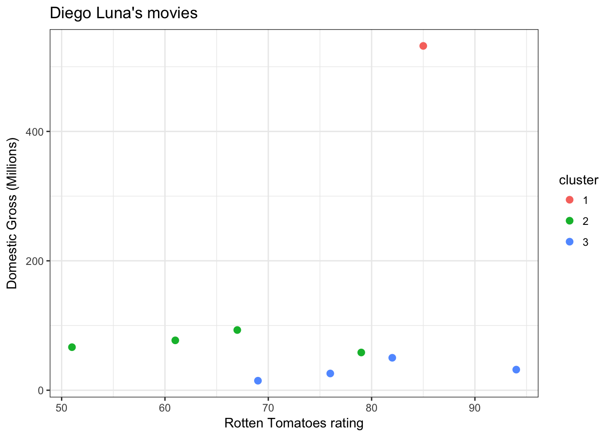
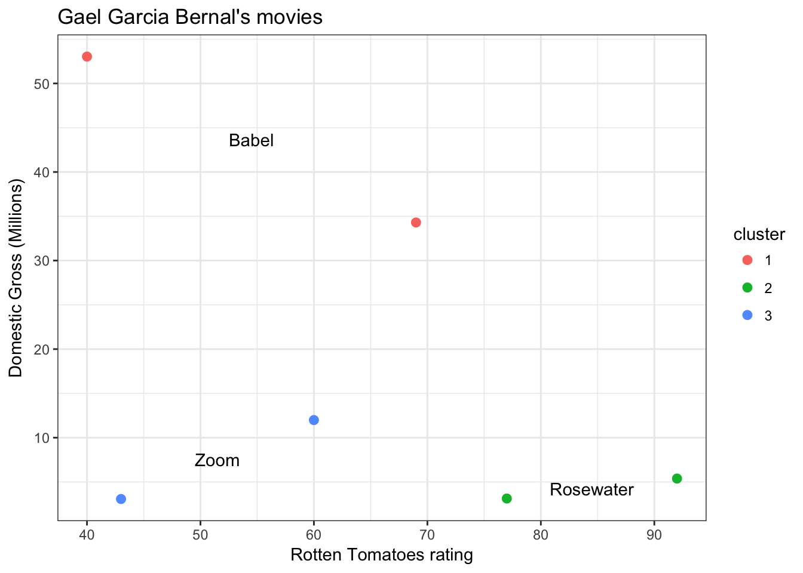

3 An Illustrative Analysis
http://fivethirtyeight.com has a clever series of articles on the types of movies different actors make in their careers: https://fivethirtyeight.com/tag/hollywood-taxonomy/
I’d like to do a similar analysis. Let’s do this in order:
- Let’s do this analysis for Diego Luna
- Let’s use a clustering algorithm to determine the different types of movies they make
- Then, let’s write an application that performs this analysis for any actor and test it with Gael García Bernal
- Let’s make the application interactive so that a user can change the actor and the number of movie clusters the method learns.
3.1 Gathering data
3.1.1 Movie ratings
For this analysis we need to get the movies Diego Luna was in, along with their Rotten Tomatoes ratings. For that we scrape this webpage: https://www.rottentomatoes.com/celebrity/diego_luna.
library(tidyverse)
library(rvest)
library(stringr)
# URL base for search
base_url <- "https://www.rottentomatoes.com/celebrity/"
# let's see how this works for Diego Luna
# scrape the table from the website
dl_url <- paste0(base_url, "diego_luna")
dl_html <- read_html(dl_url)
dl_tab <- dl_html %>%
html_nodes("#filmographyTbl") %>%
html_table() %>%
magrittr::extract2(1) %>%
as_tibble()
# clean it up
clean_dl_tab <- dl_tab %>%
# make sure the movie is rated
filter(RATING != "No Score Yet") %>%
# make the rating look numeric
mutate(RATING = str_replace(RATING, "%", "")) %>%
# remove producer and director credits
filter(!str_detect(CREDIT, "Prod") &
!str_detect(CREDIT, "Dir")) %>%
# convert to proper types
readr::type_convert()## Parsed with column specification:
## cols(
## RATING = col_integer(),
## TITLE = col_character(),
## CREDIT = col_character(),
## `BOX OFFICE` = col_character()
## )This is what we have so far:
| RATING | TITLE | CREDIT | BOX OFFICE | YEAR |
|---|---|---|---|---|
| 85 | Rogue One: A Star Wars Story | Captain Cassian Andor | $532.2M | 2016 |
| 89 | Blood Father | Jonah | — | 2016 |
| 82 | The Book of Life | Manolo | — | 2014 |
| 100 | I Stay with You (Me quedo contigo) | Actor | — | 2014 |
| 67 | Elysium | Julio | $90.8M | 2013 |
| 41 | Casa de mi padre | Raul | $5.9M | 2012 |
| 51 | Contraband | Gonzalo | $66.5M | 2012 |
3.1.2 Movie budgets and revenue
For the move budgets and revenue data we scrape this webpage: http://www.the-numbers.com/movie/budgets/all
# scrape the webpage
budget_url <- "http://www.the-numbers.com/movie/budgets/all"
budget_html <- read_html(budget_url)
budget_tab <- budget_html %>%
html_nodes("table") %>%
html_table(fill=TRUE) %>%
magrittr::extract2(1) %>%
select(-1) %>%
as_tibble()# clean up the result
clean_budget_tab <- budget_tab %>%
# remove all those NA rows
filter(!is.na(`Release Date`)) %>%
# make the budget columns look numeric
mutate_at(vars(-1), funs(str_replace(., "\\$", ""))) %>%
mutate_at(vars(-1), funs(str_replace_all(., ",", ""))) %>%
# rename columns
rename(release_date=`Release Date`,
movie=Movie,
production_budget=`Production Budget`,
domestic_gross=`Domestic Gross`,
worldwide_gross=`Worldwide Gross`) %>%
# convert columns to proper types
type_convert(cols(release_date=col_date(format="%m/%d/%Y"))) %>%
# represent budget and gross in millions
mutate_at(vars(-1,-2), funs(. / 1e6))This is what we have for that table now:
| release_date | movie | production_budget | domestic_gross | worldwide_gross |
|---|---|---|---|---|
| 2009-12-18 | Avatar | 425 | 760.50762 | 2783.9190 |
| 2015-12-18 | Star Wars Ep. VII: The Force Awakens | 306 | 936.66223 | 2058.6622 |
| 2007-05-24 | Pirates of the Caribbean: At World’s End | 300 | 309.42043 | 963.4204 |
| 2015-11-06 | Spectre | 300 | 200.07417 | 879.6209 |
| 2012-07-20 | The Dark Knight Rises | 275 | 448.13910 | 1084.4391 |
| 2013-07-02 | The Lone Ranger | 275 | 89.30212 | 260.0021 |
| 2012-03-09 | John Carter | 275 | 73.05868 | 282.7781 |
| 2010-11-24 | Tangled | 260 | 200.82194 | 586.5819 |
| 2007-05-04 | Spider-Man 3 | 258 | 336.53030 | 890.8753 |
| 2015-05-01 | Avengers: Age of Ultron | 250 | 459.00587 | 1404.7059 |
3.2 Manipulating the data
Next, we combine the datasets we obtained to get closer to the plot we want to make
joined_tab <- clean_dl_tab %>%
# join the two tables together
inner_join(clean_budget_tab, by=c(TITLE="movie")) This is the result of this manipulation
| RATING | TITLE | CREDIT | BOX OFFICE | YEAR | release_date | production_budget | domestic_gross | worldwide_gross |
|---|---|---|---|---|---|---|---|---|
| 85 | Rogue One: A Star Wars Story | Captain Cassian Andor | $532.2M | 2016 | 2016-12-16 | 200.0 | 532.17732 | 1050.98849 |
| 82 | The Book of Life | Manolo | — | 2014 | 2014-10-17 | 50.0 | 50.15154 | 97.65154 |
| 67 | Elysium | Julio | $90.8M | 2013 | 2013-08-09 | 120.0 | 93.05012 | 286.19209 |
| 51 | Contraband | Gonzalo | $66.5M | 2012 | 2012-01-13 | 25.0 | 66.52800 | 98.40685 |
| 94 | Milk | Jack Lira | $31.8M | 2008 | 2008-11-26 | 20.0 | 31.84130 | 57.29337 |
| 69 | Criminal | Rodrigo | $0.8M | 2004 | 2016-04-15 | 31.5 | 14.70870 | 38.77126 |
| 61 | The Terminal | Enrique Cruz | $77.1M | 2004 | 2004-06-18 | 75.0 | 77.07396 | 218.67396 |
| 79 | Open Range | Button | $58.3M | 2003 | 2003-08-15 | 26.0 | 58.33125 | 68.61399 |
| 76 | Frida | Alejandro Gomez | $25.7M | 2002 | 2002-10-25 | 12.0 | 25.88500 | 56.13124 |
3.3 Visualizing the data
Finally we have what we need to make our plot
joined_tab %>%
ggplot() +
theme_bw() +
aes(x=RATING, y=domestic_gross) +
geom_point() +
labs(title="Diego Luna's movies",
x="Rotten Tomato Rating",
y="Domestic gross (Millions)")
3.4 Modeling data
Now let’s take this data and see if a clustering algorithm partitions these movies into three sensible groups.
library(class)
library(broom)
kmeans_result <- joined_tab %>%
select(RATING, domestic_gross) %>%
kmeans(centers=3)
clustered_tab <- kmeans_result %>%
augment(data=joined_tab) %>%
rename(cluster=.cluster) %>%
as_tibble()
kmeans_centers <- kmeans_result %>%
tidy() %>%
as_tibble()Let’s see how the movies are grouped:
| TITLE | RATING | domestic_gross | cluster |
|---|---|---|---|
| Elysium | 67 | 93.05012 | 1 |
| Contraband | 51 | 66.52800 | 1 |
| The Terminal | 61 | 77.07396 | 1 |
| Open Range | 79 | 58.33125 | 1 |
| Rogue One: A Star Wars Story | 85 | 532.17732 | 2 |
| The Book of Life | 82 | 50.15154 | 3 |
| Milk | 94 | 31.84130 | 3 |
| Criminal | 69 | 14.70870 | 3 |
| Frida | 76 | 25.88500 | 3 |
3.5 Visualizing model result
Let’s remake the same plot, but use color to indicate the cluster
final_plot <- clustered_tab %>%
ggplot() +
aes(x=RATING, y=domestic_gross, color=cluster) +
geom_point(size=2.3) +
theme_bw() +
labs(title="Diego Luna's movies",
x="Rotten Tomatoes rating",
y="Domestic Gross (Millions)")
final_plot
Let’s annotate the graph with some movie titles. Since each cluster is represented by an average rating and domestic gross, let’s find the movie nearest to the average for its cluster.
# join the extended movie table with the centers table
annot_tab <- clustered_tab %>%
select(title=TITLE, rating=RATING, domestic_gross, cluster) %>%
left_join(select(kmeans_centers, x1, x2, cluster)) %>%
# calculate the distance of each movie to its center
mutate(center_dist=sqrt((rating-x1)^2+(domestic_gross-x2)^2)) %>%
# find the movie closest to each center
group_by(cluster) %>%
arrange(center_dist) %>%
slice(1)## Joining, by = "cluster"Now let’s annotate the plot with these movie titles:
final_plot +
annotate("text",
x=annot_tab$x1,
y=annot_tab$x2,
label=annot_tab$title)
Roughly, movies are clustered into Star Wars and low vs. high rated movies. The latter seem to have some difference in domestic gross. We could use statistical modeling to see if that’s the case, but will skip that for now. Do note also, that the clustering algorithm we used seems to be assigning one of the movies incorrectly, which warrants further investigation.
3.6 Abstracting the analysis
While not a tremendous success, we decide we want to carry on with this analysis. We would like to do this for other actors’ movies. To do this let’s write a function that performs the steps of this analysis that are specific to an actor.
This function must do the following:
- Scrape movie ratings from Rotten Tomatoes
- Clean up the scraped data
- Join with the budget data we downloaded previously
- Perform the clustering algorithm
- Make the final plot
With this in mind, we write functions for each of these steps, and then make one final function that puts all of these together
First, let’s write the scraping function. It will take an actor’s name and output the scraped data
scrape_rt <- function(actor, base_url="https://www.rottentomatoes.com/celebrity/") {
url <- paste0(base_url, actor)
html <- read_html(url)
html %>%
html_nodes("#filmographyTbl") %>%
html_table() %>%
magrittr::extract2(1) %>%
as_tibble()
}Ok, let’s test it with Gael García Bernal:
ggb_tab <- scrape_rt("gael_garcia_bernal")
ggb_tab %>%
head() %>%
knitr::kable()| RATING | TITLE | CREDIT | BOX OFFICE | YEAR |
|---|---|---|---|---|
| 30% | Salt and Fire | Dr. Fabio Cavani | — | 2017 |
| 75% | You’re Killing Me Susana (Me estás matando Susana) | Eligio | — | 2017 |
| 94% | Neruda | Oscar Peluchonneau | $1M | 2016 |
| 60% | Desierto | Executive Producer |
Moises $2M 201660% Zoom Edward — 2016 No Score Yet Z Actor — 2016
Good start, now let’s write the function that cleans up that table
cleanup_rt_tab <- function(data) {
data %>%
# make sure the movie is rated
filter(RATING != "No Score Yet") %>%
# make the rating look numeric
mutate(RATING = str_replace(RATING, "%", "")) %>%
# remove producer and director credits
filter(!str_detect(CREDIT, "Prod") &
!str_detect(CREDIT, "Dir")) %>%
# convert to proper types
readr::type_convert()
}And let’s test that again
ggb_tab %>% cleanup_rt_tab() %>%
head() %>%
knitr::kable()## Parsed with column specification:
## cols(
## RATING = col_integer(),
## TITLE = col_character(),
## CREDIT = col_character(),
## `BOX OFFICE` = col_character()
## )| RATING | TITLE | CREDIT | BOX OFFICE | YEAR |
|---|---|---|---|---|
| 30 | Salt and Fire | Dr. Fabio Cavani | — | 2017 |
| 75 | You’re Killing Me Susana (Me estás matando Susana) | Eligio | — | 2017 |
| 94 | Neruda | Oscar Peluchonneau | $1M | 2016 |
| 60 | Zoom | Edward | — | 2016 |
| 77 | Rosewater | Maziar Bahari | — | 2014 |
| 93 | No | René Saavedra | $2.4M | 2013 |
Next, the function that joins ratings and budgets:
join_budget <- function(data) {
data %>%
# join the two tables together
inner_join(clean_budget_tab, by=c(TITLE="movie"))
}And test it:
ggb_tab %>%
cleanup_rt_tab() %>%
join_budget() %>%
head() %>%
knitr::kable()## Parsed with column specification:
## cols(
## RATING = col_integer(),
## TITLE = col_character(),
## CREDIT = col_character(),
## `BOX OFFICE` = col_character()
## )| RATING | TITLE | CREDIT | BOX OFFICE | YEAR | release_date | production_budget | domestic_gross | worldwide_gross |
|---|---|---|---|---|---|---|---|---|
| 60 | Zoom | Edward | — | 2016 | 2006-08-11 | 35 | 11.989328 | 12.506188 |
| 77 | Rosewater | Maziar Bahari | — | 2014 | 2014-11-14 | 10 | 3.128941 | 3.168858 |
| 40 | Letters to Juliet | Victor | $53.1M | 2010 | 2010-05-14 | 30 | 53.032453 | 82.148538 |
| 43 | Blindness | Bartender/King of Ward Three | $3.1M | 2008 | 2008-10-03 | 25 | 3.073392 | 20.052958 |
| 69 | Babel | Santiago | $34.3M | 2006 | 2006-10-27 | 20 | 34.302837 | 132.121212 |
| 92 | Amores Perros | Octavio | $4.9M | 2001 | 2001-03-30 | 2 | 5.383834 | 20.883834 |
Two more functions to go. Next, we cluster the movies:
cluster_movies <- function(data, k=3) {
data <- data %>%
select(rating=RATING, title=TITLE, domestic_gross)
kmeans_result <- data %>%
select(rating, domestic_gross) %>%
kmeans(centers=k)
clustered_tab <- kmeans_result %>%
augment(data=data) %>%
rename(cluster=.cluster) %>%
as_tibble()
kmeans_centers <- kmeans_result %>%
tidy() %>%
as_tibble()
clustered_tab %>%
left_join(select(kmeans_centers, x1, x2, cluster)) %>%
# calculate the distance of each movie to its center
mutate(center_dist=sqrt((rating-x1)^2+(domestic_gross-x2)^2))
}And test:
ggb_tab %>%
cleanup_rt_tab() %>%
join_budget() %>%
cluster_movies() %>%
knitr::kable()## Parsed with column specification:
## cols(
## RATING = col_integer(),
## TITLE = col_character(),
## CREDIT = col_character(),
## `BOX OFFICE` = col_character()
## )## Joining, by = "cluster"| rating | title | domestic_gross | cluster | x1 | x2 | center_dist |
|---|---|---|---|---|---|---|
| 60 | Zoom | 11.989328 | 3 | 51.5 | 7.531360 | 9.598098 |
| 77 | Rosewater | 3.128941 | 2 | 84.5 | 4.256387 | 7.584269 |
| 40 | Letters to Juliet | 53.032453 | 1 | 54.5 | 43.667645 | 17.261218 |
| 43 | Blindness | 3.073392 | 3 | 51.5 | 7.531360 | 9.598098 |
| 69 | Babel | 34.302837 | 1 | 54.5 | 43.667645 | 17.261218 |
| 92 | Amores Perros | 5.383834 | 2 | 84.5 | 4.256387 | 7.584269 |
Finally, the function that makes and annotates the plot
plot_movies <- function(data, actor) {
plt <- data %>% ggplot() +
aes(x=rating, y=domestic_gross, color=cluster) +
geom_point(size=2.3) +
theme_bw() +
labs(title=paste0(actor, "'s movies"),
x="Rotten Tomatoes rating",
y="Domestic Gross (Millions)")
annot_dat <- data %>%
group_by(cluster) %>%
arrange(center_dist) %>%
slice(1)
plt <- plt +
annotate("text",
x=annot_dat$x1,
y=annot_dat$x2,
label=annot_dat$title)
plt
}And a final test:
ggb_tab %>%
cleanup_rt_tab() %>%
join_budget() %>%
cluster_movies() %>%
plot_movies("Gael García Bernal")## Parsed with column specification:
## cols(
## RATING = col_integer(),
## TITLE = col_character(),
## CREDIT = col_character(),
## `BOX OFFICE` = col_character()
## )## Joining, by = "cluster"Now, we can make one final function that puts all of this together:
analyze_actor <- function(actor, k=3, base_url="https://www.rottentomatoes.com/celebrity/") {
# first let's make the name work with RT
rt_name <- actor %>%
str_to_lower() %>%
str_replace_all(" ", "_")
message("Scraping Rotten Tomatoes with name ", rt_name)
dirty_dat <- scrape_rt(rt_name, base_url=base_url)
message("Preparing data for analysis")
clean_dat <- dirty_dat %>%
cleanup_rt_tab() %>%
join_budget()
message("Performing clustering and plotting")
clean_dat %>% cluster_movies(k=k) %>%
plot_movies(actor)
}And a final test:
analyze_actor("Gael Garcia Bernal")## Scraping Rotten Tomatoes with name gael_garcia_bernal## Preparing data for analysis## Parsed with column specification:
## cols(
## RATING = col_integer(),
## TITLE = col_character(),
## CREDIT = col_character(),
## `BOX OFFICE` = col_character()
## )## Performing clustering and plotting## Joining, by = "cluster"
3.7 Making analyses accessible
Now that we have written a function to analyze an actor’s movies, we can make these analyses easier to produce by creating an interactive application that wraps our new function. The shiny package makes creating this type of application easy. This shiny code to creates our movie analysis application:
library(shiny)
library(miniUI)
source("utils.r")
ui <- miniPage(
gadgetTitleBar("Movie analysis app"),
miniTabstripPanel(
miniTabPanel("Parameters", icon=icon("sliders"),
miniContentPanel(
textInput("actor", "Actor", "Diego Luna"),
numericInput("k", "Num. clusters", 3)
)
),
miniTabPanel("Plot", icon=icon("area-chart"),
miniContentPanel(
plotOutput("movie_plot", height="100%")
)
),
miniTabPanel("Data", icon=icon("table"),
miniContentPanel(
DT::dataTableOutput("table", height="100%")
)
)
)
)
server <- function(input, output, session) {
scrapeTable <- reactive({
scrape_table(input$actor)
})
clusterMovies <- reactive({
scrapeTable() %>%
cluster_movies(input$k)
})
displayTable <- reactive({
clusterMovies() %>%
select(title, rating, domestic_gross, cluster)
})
output$movie_plot <- renderPlot({
clusterMovies() %>% plot_movies(input$actor)
})
output$table <- DT::renderDataTable({
displayTable()
})
observeEvent(input$done, {
stopApp(TRUE)
})
}
shinyApp(ui, server)